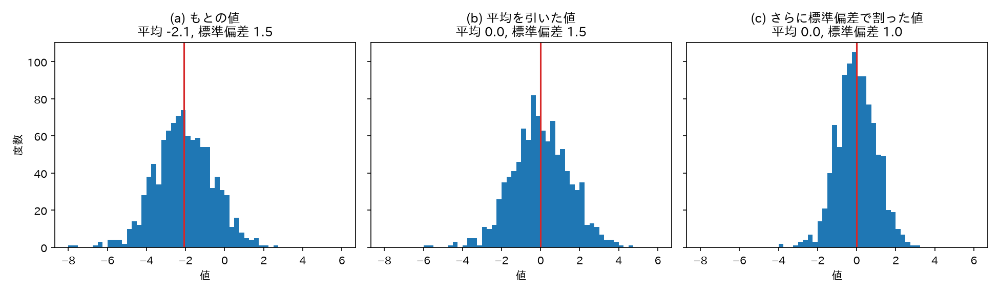

距離と類似度
距離と類似度
相関係数は, 2 つの観測項目 (データフレームの列) がどれだけ連動するかを表しました. これに対して, 2 つの観測対象 (行) がどれだけ似ているかを表すのが距離と類似度です. 都道府県同士, 顧客同士, 文章同士のように, 観測対象を複数の項目の値の組として比べるときに使います. クラスタリングは, この距離を使って似た観測対象を同じグループにまとめます.
ここでは, 散布図行列で使った都道府県別のデータ (こちら) を使います. 各都道府県は, 平均身長 (height), 体重 (weight), 食費 (food), 睡眠時間 (sleep), 運動時間 (sports) の 5 つの値の組で表されます.
import numpy as np
import pandas as pd
from scipy.spatial import distance
df = pd.read_csv('data/pref_stats.csv', encoding='utf-8-sig', index_col='pref')
print(df.loc[['北海道', '東京都', '沖縄県']])
"""
height weight food sleep sports
pref
北海道 170.4 63.7 65739 477 15
東京都 170.5 61.3 83506 461 16
沖縄県 168.7 60.6 56298 482 20
"""ユークリッド距離
2 つの観測対象を m 個の項目の値の組 \boldsymbol{a} = (a_1, \dots, a_m), \boldsymbol{b} = (b_1, \dots, b_m) で表します. 項目ごとの差を 2 乗して足し, 平方根をとったものをユークリッド距離といいます.
- ユークリッド距離 (Euclidean distance)
d(\boldsymbol{a}, \boldsymbol{b}) = \sqrt{\sum_{j=1}^{m} (a_j - b_j)^2}
項目が 2 つなら, ユークリッド距離は散布図上の 2 点を結ぶ線分の長さ (三平方の定理) に一致します. 項目が 3 つ以上あっても同じ式で計算できます.
北海道と沖縄県の距離を, 式のとおりに計算した場合と scipy の関数を使った場合で比べてみましょう.
a = df.loc['北海道']
b = df.loc['沖縄県']
# 式のとおりに計算する
print(np.sqrt(((a - b) ** 2).sum()))
# scipy の関数で計算する
print(distance.euclidean(a, b))
"""
9441.003310030137
9441.003310030137
"""
# 項目ごとの差の2乗
print((a - b) ** 2)
"""
height 2.89
weight 9.61
food 89132481.00
sleep 25.00
sports 25.00
"""項目ごとの差の 2 乗を見ると, 距離のほとんどが食費の差で決まっています. 食費は円単位で数万の値をとり, 身長 (cm) や睡眠時間 (分) とは桁が違うためです. このまま計算した距離で似た都道府県を探すと, 食費が近い都道府県を探すのとほとんど変わりません.
標準化
項目ごとに単位と散らばりが違うときは, 各項目を標準化してから距離を計算します. 標準化は, 各値から項目の平均を引き, 項目の標準偏差で割る操作です (データの広がりを表す統計量で定義した標準偏差 S を使います. ピアソンの積率相関係数の説明で使った変換と同じものです).
- 標準化 (standardization)
z_i = \frac{x_i - \bar{x}}{S}
標準化した値は, 項目ごとに平均 0, 標準偏差 1 になり, 「その値が項目の平均から標準偏差いくつ分離れているか」を表します. 単位が消えるので, 身長の差と食費の差を同じ尺度で比べられます.
平均 0, 標準偏差 1 になる理由を, 標準化の 2 つの操作に分けて確かめます. 次の図は, 平均がおよそ -2, 標準偏差がおよそ 1.5 のデータ 1000 個のヒストグラムで, 赤い線が平均です. (b) のように各値から平均を引くと, 分布の形を保ったまま全体が平行移動し, 平均が 0 になります. 平均からの差は変わらないので, 標準偏差は 1.5 のままです. (c) のようにさらに標準偏差 S で割ると, 平均からの差がすべて 1/S 倍になるので, 標準偏差も 1/S 倍になって S \times 1/S = 1 になります. この例では S が 1 より大きいので分布の幅が縮み, 同じ個数のデータが狭い範囲に入るため, ヒストグラムの山が高くなります.

z = (df - df.mean()) / df.std(ddof=0)
print(z.loc[['北海道', '東京都', '沖縄県']].round(2))
"""
height weight food sleep sports
pref
北海道 0.74 1.25 -1.28 0.31 -0.48
東京都 0.91 -0.82 2.45 -1.55 0.03
沖縄県 -2.10 -1.42 -3.27 0.90 2.10
"""pandas の .std() は, 既定では n でなく n-1 で割った標準偏差を返します. 標準偏差の定義 (n で割る) に合わせるには ddof=0 を指定します. どちらで割っても全項目が同じ比率で拡大・縮小されるだけなので, どの都道府県同士が近いかの順位は変わりません.
標準化したデータで北海道と沖縄県の距離を計算し直すと, 身長, 体重, 運動時間の差も距離に効くようになります.
print(distance.euclidean(z.loc['北海道'], z.loc['沖縄県']))
"""
5.114060111150499
"""
print(((z.loc['北海道'] - z.loc['沖縄県']) ** 2).round(2))
"""
height 8.09
weight 7.14
food 3.94
sleep 0.34
sports 6.65
"""北海道から他の都道府県までの距離を計算し, 近い順に並べてみます.
dist = z.apply(lambda row: distance.euclidean(z.loc['北海道'], row), axis=1)
print(dist.sort_values().round(2))
"""
pref
北海道 0.00
和歌山県 1.47
群馬県 1.55
福島県 1.61
...
山口県 3.91
東京都 4.69
沖縄県 5.11
"""北海道に最も近いのは和歌山県で, 地理的に隣り合う都道府県が近いとは限りません. ここでの距離は選んだ 5 項目だけで測っているので, 「この 5 項目の値の組が似ている」という意味の近さです. どの項目を使うかによって, 何と何が近いかは変わります.
コサイン類似度
ユークリッド距離は値そのものの差を測ります. これに対してコサイン類似度は, 値の組を原点から伸びる矢印 (ベクトル) と見て, 2 本の矢印の向きがどれだけ揃っているかを測ります.
- コサイン類似度 (cosine similarity)
\cos(\boldsymbol{a}, \boldsymbol{b}) = \frac{\sum_{j=1}^{m} a_j b_j}{\sqrt{\sum_{j=1}^{m} a_j^2} \sqrt{\sum_{j=1}^{m} b_j^2}}
コサイン類似度は -1 から 1 の値をとり, 1 なら同じ向き, 0 なら直交, -1 なら逆向きです. 1 からコサイン類似度を引いた値をコサイン距離と呼びます.
標準化したデータでは, 矢印の向きは「どの項目が平均より大きく, どの項目が平均より小さいか」の組み合わせを表します.
def cos_sim(a, b):
return np.dot(a, b) / (np.linalg.norm(a) * np.linalg.norm(b))
for p in ['青森県', '沖縄県', '東京都']:
print(p, round(cos_sim(z.loc['北海道'], z.loc[p]), 2))
"""
青森県 0.62
沖縄県 0.01
東京都 -0.63
"""北海道は体重が平均より大きく, 食費が平均より小さく, 睡眠時間が平均より長い都道府県です. 東京都はこの 3 項目がすべて逆なので, コサイン類似度が負になります.
コサイン類似度は矢印の長さ (値の大きさ) を無視します. そのため, 単語の出現回数のように, 長い文章ほど全体の値が大きくなるデータを比べるのに向いています. 文章のベクトル化と類似度の評価では, 文章をベクトルに変換してコサイン類似度で比べます.